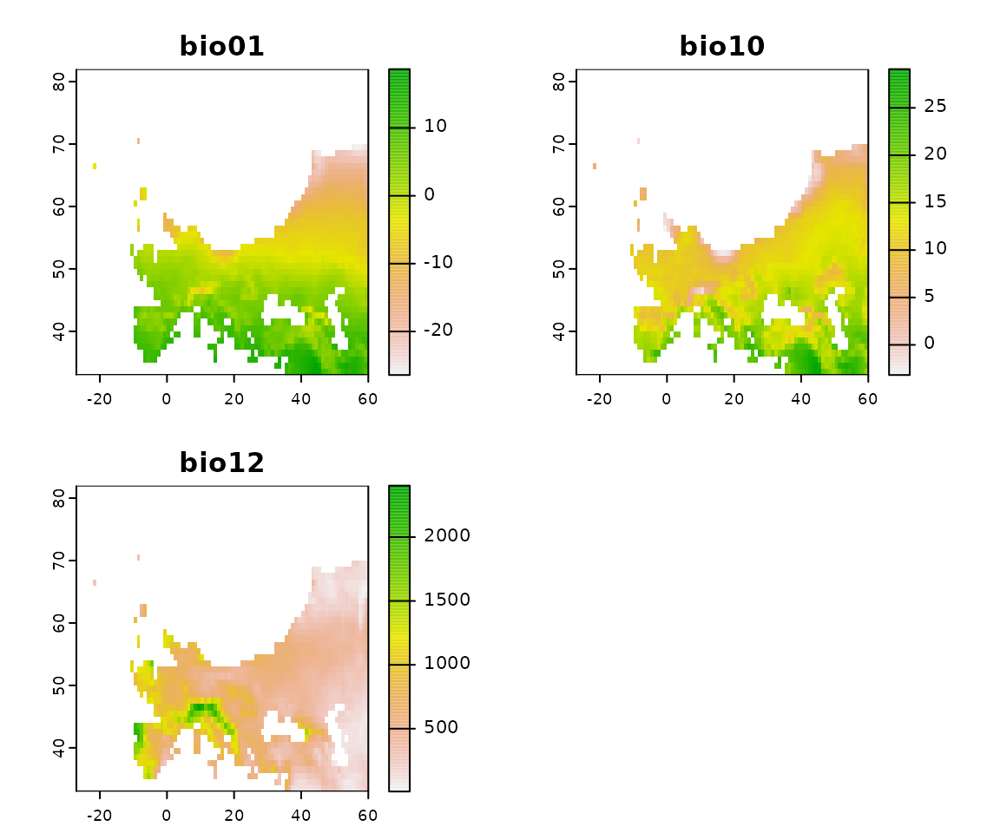
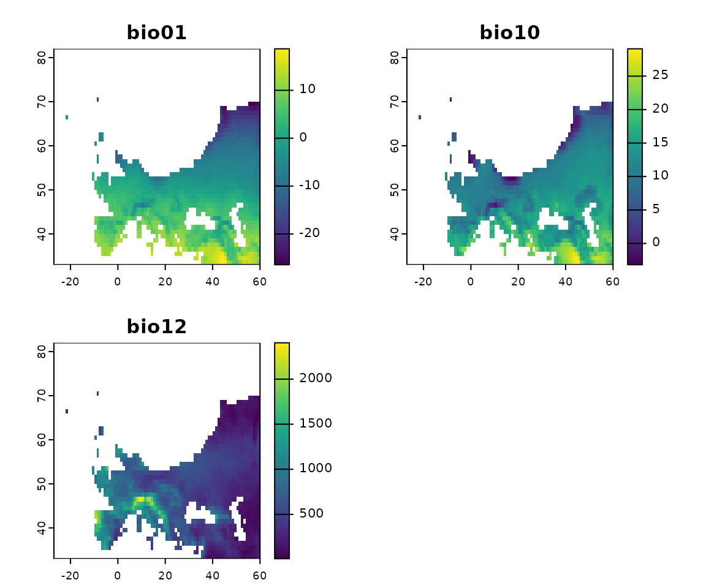
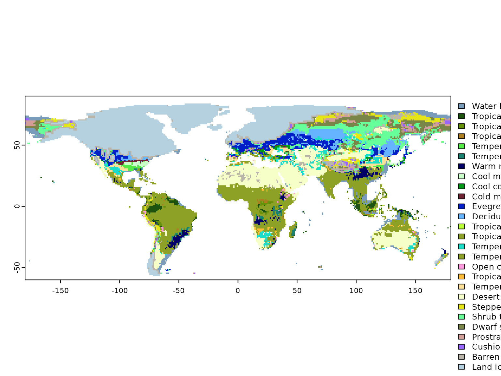
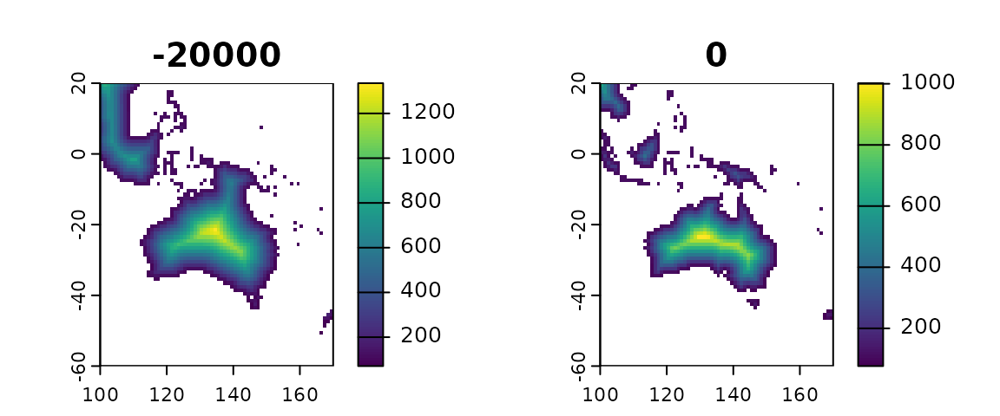

Install the library
You will need to install the library from GitHub. For this step, you
will need to use devtools (if you haven’t done so already,
install it from CRAN with install.packages("devtools").
Once you have devtools, simply use:
devtools::install_github("EvolEcolGroup/pastclim")There is a vignette with detailed step by step examples on how to use
the library. You can find it on the website for the package. Or, if
needed, you can build it when installing pastclim :
devtools::install_github("EvolEcolGroup/pastclim", build_vignettes = TRUE)And read it directly in R with:
vignette("pastclim_overview", package = "pastclim")Depending on the operating system you use, you might need additional packages to build a vignette.
NOTE: pastclim relies on terra to process
rasters. There is a known bug in terra that leads to the
occasional message:
"Error in x$.self$finalize() : attempt to apply non-function"being reported. This is an error related to garbage collection, which does not affect the script being correctly executed, so it can be ignored. More discussion of this issue can be found on stackoverflow
Download the data
You will need to download climatic reconstructions before being able
to do any work with pastclim. Currently the library
contains two datasets: Beyer2020 which covers the last 120k
years; and, for project that go further back in time, Krapp2021
which goes back to 800kya. It is possible to add additional, custom
datasets, but you will need some familiarity with handling
netcdf files (see the vignette on ‘custom dataset’).
vignette("custom_datasets", package = "pastclim")A list of all datasets available can be obtained by typing
vignette("available_datasets", package = "pastclim")Please be aware that using any dataset made available to pastclim will require to cite both pastclim and the original publication presenting the dataset. The reference to cite for pastclim can be obtained by typing
citation("pastclim")
#>
#> To cite pastclim in publications use:
#>
#> Leonardi M, Hallet EY, Beyer R, Krapp M, Manica A (2022). “pastclim:
#> an R package to easily access and use palaeoclimatic
#> reconstructions.” bioRxiv. <URL:
#> https://www.biorxiv.org/content/10.1101/2022.05.18.492456v1>.
#>
#> A BibTeX entry for LaTeX users is
#>
#> @Article{,
#> title = {pastclim: an R package to easily access and use palaeoclimatic reconstructions},
#> author = {Michela Leonardi and Emily Y. Hallet and Robert Beyer and Mario Krapp and Andrea Manica},
#> journal = {bioRxiv},
#> year = {2022},
#> url = {https://www.biorxiv.org/content/10.1101/2022.05.18.492456v1},
#> }while the reference associated to any dataset of choice (in this case “Beyer2020”) is displayed together with the general information on it through the command:
help("Beyer2020")#> Documentation for the Beyer2020 dataset
#>
#> Description:
#>
#> This dataset covers the last 120k years, at intervals of 1/2 k
#> years, and a resolution of 0.5 degrees in latitude and longitude.
#>
#> Details:
#>
#> If you use this dataset, make sure to cite the original
#> publication:
#>
#> Beyer, R.M., Krapp, M. & Manica, A. High-resolution terrestrial
#> climate, bioclimate and vegetation for the last 120,000 years. Sci
#> Data 7, 236 (2020). doi:doi.org/10.1038/s41597-020-0552-1
#> <https://doi.org/doi.org/10.1038/s41597-020-0552-1>
#>
#> The version included in `pastclim` has the ice sheets masked, as
#> well as internal seas (Black and Caspian Sea) removed. The latter
#> are based on:
#>
#> <https://www.marineregions.org/gazetteer.php?p=details&id=4278>
#>
#> <https://www.marineregions.org/gazetteer.php?p=details&id=4282>
#>
#> As there is no reconstruction of their depth through time, modern
#> outlines were used for all time steps.
#>
#> Also, for bio15, the coefficient of variation was computed after
#> adding one to monthly estimates, and it was multiplied by 100
#> following <https://pubs.usgs.gov/ds/691/ds691.pdf>
#>
#> Changelog
#>
#> v1.1.0 Added monthly variables. Files can be downloaded from:
#> <https://zenodo.org/deposit/7062281>
#>
#> v1.0.0 Remove ice sheets and internal seas, and use correct
#> formula for bio15. Files can be downloaded from:
#> doi:doi.org/10.6084/m9.figshare.19723405.v1
#> <https://doi.org/doi.org/10.6084/m9.figshare.19723405.v1>For the datasets available in pastclim, there are
functions that help you download the data and choose the variables. When
you start pastclim for the first time, you will need to set
the path where reconstructions are stored using
set_data_path. By default, the package data path will be
used:
#> Loading required package: terra
#> terra 1.6.47#> The data_path will be set to /home/andrea/.local/share/R/pastclim.
#> A copy of the Example dataset will be copied there.
#> This path will be saved by pastclim for future use.
#> Proceed?
#>
#> 1: Yes
#> 2: NoPress 1 if you are happy with the offered choices, and
pastclim will remember your data path in future sessions.
Note that your data path will look different than in this example, as it
depends on your user name and operating system.
If you prefer using a custom path (e.g. in “~/my_reconstructions”), it can be set with:
set_data_path(path_to_nc = "~/my_reconstructions")The package includes a small dataset, Example, that we will use in this vignette but is not suitable for running analyses; the real datasets are large (from 100s of Mb to a few Gb), and you will need to specify what you want to download (see below).
Let us start by inspecting the Example dataset. We can get a list of variables available for this dataset with:
get_vars_for_dataset(dataset = "Example")
#> [1] "bio01" "bio10" "bio12" "biome"and the available time steps can be obtained with:
get_time_steps(dataset = "Example")
#> [1] -20000 -15000 -10000 -5000 0For Beyer2020 and Krapp2021, you can get a list of available variables for each dataset with:
get_vars_for_dataset(dataset = "Beyer2020")
#> [1] "bio01" "bio04" "bio05"
#> [4] "bio06" "bio07" "bio08"
#> [7] "bio09" "bio10" "bio11"
#> [10] "bio12" "bio13" "bio14"
#> [13] "bio15" "bio16" "bio17"
#> [16] "bio18" "bio19" "npp"
#> [19] "lai" "biome" "altitude"
#> [22] "rugosity" "temperature_01" "temperature_02"
#> [25] "temperature_03" "temperature_04" "temperature_05"
#> [28] "temperature_06" "temperature_07" "temperature_08"
#> [31] "temperature_09" "temperature_10" "temperature_11"
#> [34] "temperature_12" "precipitation_01" "precipitation_02"
#> [37] "precipitation_03" "precipitation_04" "precipitation_05"
#> [40] "precipitation_06" "precipitation_07" "precipitation_08"
#> [43] "precipitation_09" "precipitation_10" "precipitation_11"
#> [46] "precipitation_12" "cloudiness_01" "cloudiness_02"
#> [49] "cloudiness_03" "cloudiness_04" "cloudiness_05"
#> [52] "cloudiness_06" "cloudiness_07" "cloudiness_08"
#> [55] "cloudiness_09" "cloudiness_10" "cloudiness_11"
#> [58] "cloudiness_12" "relative_humidity_01" "relative_humidity_02"
#> [61] "relative_humidity_03" "relative_humidity_04" "relative_humidity_05"
#> [64] "relative_humidity_06" "relative_humidity_07" "relative_humidity_08"
#> [67] "relative_humidity_09" "relative_humidity_10" "relative_humidity_11"
#> [70] "relative_humidity_12" "wind_speed_01" "wind_speed_02"
#> [73] "wind_speed_03" "wind_speed_04" "wind_speed_05"
#> [76] "wind_speed_06" "wind_speed_07" "wind_speed_08"
#> [79] "wind_speed_09" "wind_speed_10" "wind_speed_11"
#> [82] "wind_speed_12" "mo_npp_01" "mo_npp_02"
#> [85] "mo_npp_03" "mo_npp_04" "mo_npp_05"
#> [88] "mo_npp_06" "mo_npp_07" "mo_npp_08"
#> [91] "mo_npp_09" "mo_npp_10" "mo_npp_11"
#> [94] "mo_npp_12"and
get_vars_for_dataset(dataset = "Krapp2021")
#> [1] "bio01" "bio04" "bio05" "bio06"
#> [5] "bio07" "bio08" "bio09" "bio10"
#> [9] "bio11" "bio12" "bio13" "bio14"
#> [13] "bio15" "bio16" "bio17" "bio18"
#> [17] "bio19" "npp" "biome" "lai"
#> [21] "altitude" "rugosity" "temperature_01" "temperature_02"
#> [25] "temperature_03" "temperature_04" "temperature_05" "temperature_06"
#> [29] "temperature_07" "temperature_08" "temperature_09" "temperature_10"
#> [33] "temperature_11" "temperature_12" "precipitation_01" "precipitation_02"
#> [37] "precipitation_03" "precipitation_04" "precipitation_05" "precipitation_06"
#> [41] "precipitation_07" "precipitation_08" "precipitation_09" "precipitation_10"
#> [45] "precipitation_11" "precipitation_12" "mo_npp_01" "mo_npp_02"
#> [49] "mo_npp_03" "mo_npp_04" "mo_npp_05" "mo_npp_06"
#> [53] "mo_npp_07" "mo_npp_08" "mo_npp_09" "mo_npp_10"
#> [57] "mo_npp_11" "mo_npp_12" "cloudiness_01" "cloudiness_02"
#> [61] "cloudiness_03" "cloudiness_04" "cloudiness_05" "cloudiness_06"
#> [65] "cloudiness_07" "cloudiness_08" "cloudiness_09" "cloudiness_10"
#> [69] "cloudiness_11" "cloudiness_12"For monthly variables, months are coded as “_xx” at the end of the variable names; e.g. “temperature_02” is the mean monthly temperature for February. A more thorough description of each variable (including the units) can be obtained with:
get_vars_for_dataset(dataset="Example", details = TRUE)
#> variable long_name units
#> 1 bio01 annual mean temperature degrees Celsius
#> 2 bio10 mean temperature of warmest quarter degrees Celsius
#> 3 bio12 annual precipitation mm per year
#> 4 biome biome (from BIOME4)You will not be able to get the available time steps until you
download the data. pastclim offers an interface to download
the necessary files into your data path.
To inspect which datasets and variables have already been downloaded in the data path, we can use:
get_downloaded_datasets()
#> $Example
#> [1] "bio01" "bio10" "bio12" "biome"Let’s now download bio01 and bio05 for the
Beyer2020 dataset (this operation might take several minutes,
as the datasets are large; R will pause until the download
is complete):
download_dataset(dataset = "Beyer2020", bio_variables = c("bio01", "bio05"))Note that multiple variables can be packed together into a single
file, so get_downloaded_datasets() might list more
variables than the ones that we chose to download (it depends on the
dataset).
When upgrading pastclim, new version of various datasets
might become available. This will make the previously downloaded
datasets obsolete, and you might suddenly be told by
pastclim that some variables have to be re-downloaded. This
can lead to the accumulation of old datasets in your data path. The
function clean_data_path() can be used to delete old files
that are no longer needed.
Get climate for locations
Often we want to get the climate for specific locations. We can do so
by using the function location_slice. With this function,
we will get slices of climate for the times relevant to the locations of
interest.
Let us consider five possible locations of interest: Iho Eleru (a Late Stone Age inland site in Nigeria), La Riera (a Late Palaeolithic coastal site on Spain), Chalki (a Mesolithic site on a Greek island), Oronsay (a Mesolithic site in the Scottish Hebrides), and Atlantis (the fabled submersed city mentioned by Plato). For each site we have a date (realistic, but made up) that we are interested in associating with climatic reconstructions.
locations <- data.frame(
name = c("Iho Eleru","La Riera", "Chalki", "Oronsay","Atlantis"),
longitude = c(5,-4, 27, -6, -24), latitude = c(7, 44, 36, 56, 31),
time_bp = c(-11200, -18738,-10227, -10200, -11600)
)
locations
#> name longitude latitude time_bp
#> 1 Iho Eleru 5 7 -11200
#> 2 La Riera -4 44 -18738
#> 3 Chalki 27 36 -10227
#> 4 Oronsay -6 56 -10200
#> 5 Atlantis -24 31 -11600And extract their climatic conditions for bio01 and bio12:
location_slice(
x = locations, bio_variables = c("bio01", "bio12"),
dataset = "Example", nn_interpol = FALSE
)
#> name longitude latitude time_bp time_bp_slice bio01 bio12
#> 1 Iho Eleru 5 7 -11200 -10000 25.346703 2204.595
#> 2 La Riera -4 44 -18738 -20000 5.741851 1149.570
#> 3 Chalki 27 36 -10227 -10000 NA NA
#> 4 Oronsay -6 56 -10200 -10000 6.937467 1362.824
#> 5 Atlantis -24 31 -11600 -10000 NA NApastclim finds the closest time steps (slices) available
for a given date, and outputs the slice used in column
time_bp_slice (the Example dataset that we use in
this vignette has a temporal resolution of only 5k years).
Note that the last Chalki and Atlantis, for the appropriate time
steps, are not available. This occurs when a location, in the
reconstructions, was either under water or ice, and so
pastclim can not return any estimate. In some instances,
this is due to the discretisation of space in the raster. We can
interpolate climate among the nearest neighbours, thus using climate
reconstructions for neighbouring pixels if the location is just off one
or more land pixels:
location_slice(
x = locations, bio_variables = c("bio01", "bio12"),
dataset = "Example", nn_interpol = TRUE)
#> name longitude latitude time_bp time_bp_slice bio01 bio12
#> 1 Iho Eleru 5 7 -11200 -10000 25.346703 2204.5950
#> 2 La Riera -4 44 -18738 -20000 5.741851 1149.5703
#> 3 Chalki 27 36 -10227 -10000 17.432425 723.1012
#> 4 Oronsay -6 56 -10200 -10000 6.937467 1362.8245
#> 5 Atlantis -24 31 -11600 -10000 NA NAFor Chalki, we can see that the problem is indeed that, since it is a
small island, it is not well represented in the reconstructions (bear in
mind that the Example dataset is very coarse in
resolution), and so we can reconstruct some appropriate climate by
interpolating. Atlantis, on the other hand, is the middle of the ocean,
and so there is no information on what the climate might have been
before became submerged (assuming it ever existed…). Note that
nn_interpol = TRUE is the default for this function.
Sometimes, we want to get a time series of climatic reconstructions, thus allowing us to see how climate changed over time:
locations_ts <- location_series(
x = locations,
bio_variables = c("bio01", "bio12"),
dataset = "Example")The resulting dataframe can be subsetted to get the time series for each location (the small Example dataset only contains 5 time slices):
subset(locations_ts, name == "Iho Eleru")
#> name longitude latitude time_bp bio01 bio12
#> 1 Iho Eleru 5 7 -20000 22.55133 1577.238
#> 1.1 Iho Eleru 5 7 -15000 23.27008 1850.715
#> 1.2 Iho Eleru 5 7 -10000 25.34670 2204.595
#> 1.3 Iho Eleru 5 7 -5000 25.65009 2109.735
#> 1.4 Iho Eleru 5 7 0 26.77033 1840.845Also note that for some locations, climate can be available only for certain time steps, depending on sea level and ice sheet extent. This is the case for Oronsay:
subset(locations_ts, name == "Oronsay")
#> name longitude latitude time_bp bio01 bio12
#> 4 Oronsay -6 56 -20000 NA NA
#> 4.1 Oronsay -6 56 -15000 NA NA
#> 4.2 Oronsay -6 56 -10000 6.937467 1362.824
#> 4.3 Oronsay -6 56 -5000 8.167976 1462.253
#> 4.4 Oronsay -6 56 0 8.185000 1434.490We can quickly plot bio1 through time for the
locations:
library(ggplot2)
ggplot(data=locations_ts, aes(x=time_bp, y=bio01, group=name)) +
geom_line(aes(col=name))+
geom_point(aes(col=name))
#> Warning: Removed 12 rows containing missing values (`geom_line()`).
#> Warning: Removed 12 rows containing missing values (`geom_point()`).As expected, we don’t have data for Atlantis (as it is always
underwater), but we also fail to retrieve data for Chalki. This is
because location_series does not interpolate from nearest
neighbours by default (so, it differs from location_slice
in behaviour). The rationale for this behaviour is that we are intersted
in whether some locations might end underwater, and so we do not want to
grab climate estimates if they have been submerged. However, in some
cases (as for Chalki) it might be necessary to allow for
interpolation.
Pretty labels for environmental variables can be generated with
var_labels:
library(ggplot2)
ggplot(data=locations_ts, aes(x=time_bp, y=bio01, group=name)) +
geom_line(aes(col=name))+
geom_point(aes(col=name))+
labs(y = var_labels("bio01", dataset="Example", abbreviated=TRUE),
x = "time BP (yr)")
#> Warning: Removed 12 rows containing missing values (`geom_line()`).
#> Warning: Removed 12 rows containing missing values (`geom_point()`).Note that these climatic reconstructions were extracted from
the Example dataset, which is very coarse, so they should
not be used to base any real inference about their environmental
conditions. But note that higher resolution is not always better. It is
important to consider the appropriate spatial scale that is relevant to
the question at hand. Sometimes, it might be necessary to downscale the
simulations (see section at the end of this vignette), or in other cases
we might want to get estimates to cover an area around the specific
location (e.g. if we are comparing to proxies that capture the
climatology of a broad area, such as certain sediment cores that capture
pollen from the broader region). location_slice and
location_series can provide mean estimates for areas around
the location coordinates by setting the buffer parameter
(see the help pages of those functions for details).
Get climate for a region
Instead of focussing on specific locations, we might want to look at a whole region. For a given time step, we can extract a slice of climate with
climate_20k <- region_slice(
time_bp = -20000,
bio_variables = c("bio01", "bio10", "bio12"),
dataset = "Example"
)This returns a raster (technically a SpatRaster object
as defined in the terra library, meaning that we can
perform all standard terra raster operations on this
object). To interact with SpatRaster objects, it is best to
load the terra library (otherwise you might get errors as
the correct method is not found, e.g. when plotting); we can then get a
summary of this object:
library(terra)
climate_20k
#> class : SpatRaster
#> dimensions : 150, 360, 3 (nrow, ncol, nlyr)
#> resolution : 1, 1 (x, y)
#> extent : -180, 180, -60, 90 (xmin, xmax, ymin, ymax)
#> coord. ref. : lon/lat WGS 84
#> sources : example_climate_v1.2.3.nc:BIO1
#> example_climate_v1.2.3.nc:BIO10
#> example_climate_v1.2.3.nc:BIO12
#> varnames : bio01 (annual mean temperature)
#> bio10 (mean temperature of warmest quarter)
#> bio12 (annual precipitation)
#> names : bio01, bio10, bio12
#> unit : degrees Celsius, degrees Celsius, mm per year
#> time (years): -18050and plot these three variables (the layers of the raster):
We can add more informative labels with var_labels:
terra::plot(climate_20k, main = var_labels(climate_20k, dataset = "Example"))
It is possible to also load a time series of rasters with the
function region_series. In this case, the function returns
a SpatRasterDataset, with each variable as a
sub-dataset:
climate_region <- region_series(
time_bp = list(min = -15000, max = 0),
bio_variables = c("bio01", "bio10", "bio12"),
dataset = "Example")
climate_region
#> class : SpatRasterDataset
#> subdatasets : 3
#> dimensions : 150, 360 (nrow, ncol)
#> nlyr : 4, 4, 4
#> resolution : 1, 1 (x, y)
#> extent : -180, 180, -60, 90 (xmin, xmax, ymin, ymax)
#> coord. ref. : lon/lat WGS 84
#> source(s) : example_climate_v1.2.3.nc
#> names : bio01, bio10, bio12Each of these sub-dataset is a SpatRaster, with time
steps as layers:
climate_region$bio01
#> class : SpatRaster
#> dimensions : 150, 360, 4 (nrow, ncol, nlyr)
#> resolution : 1, 1 (x, y)
#> extent : -180, 180, -60, 90 (xmin, xmax, ymin, ymax)
#> coord. ref. : lon/lat WGS 84
#> source : example_climate_v1.2.3.nc:BIO1
#> varname : bio01 (annual mean temperature)
#> names : bio01_-15000, bio01_-10000, bio01_-5000, bio01_0
#> unit : degrees Celsius, degrees Celsius, degrees Celsius, degrees Celsius
#> time (years): -13050 to 1950Note that terra stores dates in years a AD, not BP.
We can then plot the time series of a given variable (we relabel the plots to use years bp):

To plot all climate variables for a given time step, we can slice the time series:
slice_10k <- slice_region_series(climate_region, time_bp = -10000)
terra::plot(slice_10k, main = names(slice_10k))Instead of giving a minimum and maximum time step, you can also
provide specific time steps to region_series. Note that
pastclim has a function to get a vector of the time steps
for a given MIS in a dataset. For example, for MIS 1, we get:
mis1_steps <- get_mis_time_steps(mis = 1, dataset = "Example")
mis1_steps
#> [1] -10000 -5000 0Which we can then use:
climate_mis1 <- region_series(
time_bp = mis1_steps,
bio_variables = c("bio01", "bio10", "bio12"),
dataset = "Example"
)
climate_mis1
#> class : SpatRasterDataset
#> subdatasets : 3
#> dimensions : 150, 360 (nrow, ncol)
#> nlyr : 3, 3, 3
#> resolution : 1, 1 (x, y)
#> extent : -180, 180, -60, 90 (xmin, xmax, ymin, ymax)
#> coord. ref. : lon/lat WGS 84
#> source(s) : example_climate_v1.2.3.nc
#> names : bio01, bio10, bio12Cropping
Often we want to focus a given region. There are a number of preset
rectangular extents in pastclim:
names(region_extent)
#> [1] "Africa" "America" "Asia" "Europe" "Eurasia" "N_America"
#> [7] "Oceania" "S_America"We can get the corners of the European extent:
region_extent$Europe
#> [1] -15 70 33 75And then we can extract climate only for Europe by setting
ext in region_slice:
europe_climate_20k <- region_slice(
time_bp = -20000,
bio_variables = c("bio01", "bio10", "bio12"),
dataset = "Example",
ext = region_extent$Europe
)
terra::plot(europe_climate_20k,
main = names(europe_climate_20k))As we can see in the plot, cutting Europe using a rectangular shape
keeps a portion of Northern Africa in the map. pastclim
includes a number of pre-generated masks for the main continental
masses, stored in the dataset region_outline in an
sf::sfc object. We can get a list with:
names(region_outline)
#> [1] "Africa" "Eurasia" "N_America" "Oceania" "S_America" "Europe"We can then use the function crop within
region_slice to only keep the area within the desired
outline.
europe_climate_20k <- region_slice(
time_bp = -20000,
c("bio01", "bio10", "bio12"),
dataset = "Example",
crop = region_outline$Europe
)
terra::plot(europe_climate_20k,
main = names(europe_climate_20k))
We can combine multiple regions together. For example, we can crop to Africa and Eurasia by unioning the two individual outlines:
library(sf)
#> Linking to GEOS 3.10.2, GDAL 3.4.1, PROJ 8.2.1; sf_use_s2() is TRUE
afr_eurasia <- sf::st_union(region_outline$Africa, region_outline$Eurasia)
climate_20k_afr_eurasia <- region_slice(
time_bp = -20000,
bio_variables = c("bio01", "bio10", "bio12"),
dataset = "Example",
crop = afr_eurasia)
terra::plot(climate_20k_afr_eurasia,
main = names(climate_20k_afr_eurasia))
Note that outlines that cross the antimeridian are split into
multiple polygons (so that they can be used without projecting the
rasters). For Eurasia, we have the eastern end of Siberia on the left
hand side of the plot. continent_outlines_union provides
the same outlines as single polygons (in case you want to use a
projection).
You can also use your own custom outline (i.e. a polygon, coded as a
terra::vect object) as a mask to limit the area covered by
the raster. Note that you need to reuse the first vertex as the last
vertex, to close the polygon:
custom_vec <- terra::vect("POLYGON ((0 70, 25 70, 50 80, 170 80, 170 10,
119 2.4, 119 0.8, 116 -7.6, 114 -12, 100 -40,
-25 -40, -25 64, 0 70))")
climate_20k_custom <- region_slice(
time_bp = -20000,
bio_variables = c("bio01", "bio10", "bio12"),
dataset = "Example",
crop = custom_vec)
terra::plot(climate_20k_custom,
main = names(climate_20k_custom))
region_series takes the same ext and
crop options as region_slice to limit the
extent of the climatic reconstructions.
Working with biomes and ice sheets
The Beyer2020 and Krapp2021 datasets include a categorical variable detailing the extension of biomes.
get_biome_classes("Example")
#> id category
#> 1 0 Water bodies
#> 2 1 Tropical evergreen forest
#> 3 2 Tropical semi-deciduous forest
#> 4 3 Tropical deciduous forest/woodland
#> 5 4 Temperate deciduous forest
#> 6 5 Temperate conifer forest
#> 7 6 Warm mixed forest
#> 8 7 Cool mixed forest
#> 9 8 Cool conifer forest
#> 10 9 Cold mixed forest
#> 11 10 Evegreen taiga/montane forest
#> 12 11 Deciduous taiga/montane forest
#> 13 12 Tropical savanna
#> 14 13 Tropical xerophytic shrubland
#> 15 14 Temperate xerophytic shrubland
#> 16 15 Temperate sclerophyll woodland
#> 17 16 Temperate broadleaved savanna
#> 18 17 Open conifer woodland
#> 19 18 Boreal parkland
#> 20 19 Tropical grassland
#> 21 20 Temperate grassland
#> 22 21 Desert
#> 23 22 Steppe tundra
#> 24 23 Shrub tundra
#> 25 24 Dwarf shrub tundra
#> 26 25 Prostrate shrub tundra
#> 27 26 Cushion forb lichen moss tundra
#> 28 27 Barren
#> 29 28 Land iceIf we need to plot the extent of a specific biome, for example the desert, we first extract the variable and then subset it to just the class we are interested in using its ID (21, in this case):
climate_20k <- region_slice(
time_bp = -20000,
bio_variables = c("bio01", "bio10", "biome"),
dataset = "Example"
)
climate_20k$desert <- climate_20k$biome
climate_20k$desert[climate_20k$desert != 21] <- FALSE
climate_20k$desert[climate_20k$desert == 21] <- TRUE
terra::plot(climate_20k, main = names(climate_20k))
The climate reconstructions do not show areas under permanent ice. Ice sheets are stored as class 28 in the “biome” variable:
To plot it, we use functions designed to get ice and land masks.
climate_20k <- region_slice(
time_bp = -20000,
bio_variables = c("bio01", "bio10"),
dataset = "Example"
)
climate_20k$ice_mask <- get_ice_mask(-20000, dataset = "Example")
climate_20k$land_mask <- get_land_mask(-20000, dataset = "Example")
terra::plot(climate_20k, main = names(climate_20k))
Set the samples within the background
In many studies, we want to set the environmental conditions at a given set of location within the background for that time period. Let us start by visualising the background for the time step of interest with a PCA:
bio_vars <- c("bio01", "bio10", "bio12")
climate_10k <- region_slice(-10000,
bio_variables = bio_vars,
dataset = "Example"
)
climate_values_10k <- df_from_region_slice(climate_10k)
climate_10k_pca <- prcomp(climate_values_10k[, bio_vars],
scale = TRUE, center = TRUE)
plot(climate_10k_pca$x[, 2] ~ climate_10k_pca$x[, 1],
pch = 20, col = "lightgray",
xlab = "PC1", ylab = "PC2"
)
We can now get the climatic conditions for the locations at this time step and compute the PCA scores based on the axes we defined on the background:
locations_10k <- data.frame(
longitude = c(0, 90, 20, 5), latitude = c(20, 45, 50, 47),
time_bp = c(-9932, -9753, -10084, -10249)
)
climate_loc_10k <- location_slice(
x = locations_10k[, c("longitude", "latitude")],
time_bp = locations_10k$time_bp, bio_variables = bio_vars,
dataset = "Example"
)
locations_10k_pca_scores <- predict(climate_10k_pca,
newdata = climate_loc_10k[, bio_vars])And now we can plot the points on top of the background
plot(climate_10k_pca$x[, 2] ~ climate_10k_pca$x[, 1],
pch = 20, col = "lightgray",
xlab = "PC1", ylab = "PC2"
)
points(locations_10k_pca_scores, pch = 20, col = "red")
If we want to pool the background from multiple time steps, we can
simple use region_series to get a series, and then
transform it into a data frame with
df_from_region_series.
Random sampling of background
NOTE: there is a bug in terra 1.6.17 that prevents this section from working; you will get a “negative probability” error when sampling if you use that version.
For a number of species distribution models, rather than using the
complete background, we need to subsample background points to our
presences. If we are interested in a single time step, we can simply
generate the raster for the time slice of interest, and use
sample_region_slice:
climate_20k <- region_slice(
time_bp = -20000,
bio_variables = c("bio01", "bio10"),
dataset = "Example"
)
this_sample <- sample_region_slice(climate_20k, size = 100)
head(this_sample)
#> cell x y bio01 bio10
#> 1 20090 109.5 34.5 8.193342 20.018669
#> 2 40890 29.5 -23.5 14.662230 19.984140
#> 3 30725 -55.5 4.5 22.180185 23.658768
#> 4 12974 -166.5 53.5 -2.230207 4.376805
#> 5 29465 124.5 8.5 21.324997 22.363653
#> 6 34413 32.5 -5.5 17.523661 18.791502We can also sample the background for multiple time steps (e.g. if we want to match the background to the number of samples based on their radiocarbon dates). So, for example, if we wanted 3 samples from 20k years ago and 5 samples from 10k years ago:
climate_ts <- region_series(
time_bp = c(-20000,-10000),
bio_variables = c("bio01", "bio10", "bio12"),
dataset = "Example",
ext = terra::ext(region_extent$Europe)
)
sampled_climate <- sample_region_series(climate_ts, size = c(3,5))
sampled_climate
#> cell x y bio01 bio10 bio12 time_bp
#> -20000.1 1669 38.5 55.5 -5.992663 11.502814 573.9282 -20000
#> -20000.2 1505 44.5 57.5 -7.425514 11.924223 475.4735 -20000
#> -20000.3 1632 1.5 55.5 -9.321626 2.096406 878.1226 -20000
#> -10000.1 465 24.5 69.5 -4.988398 9.756861 413.0946 -10000
#> -10000.2 3452 36.5 34.5 13.275476 24.962221 593.0474 -10000
#> -10000.3 764 68.5 66.5 -7.451669 12.568232 289.8186 -10000
#> -10000.4 1402 26.5 58.5 3.158829 14.422003 547.6172 -10000
#> -10000.5 3329 -1.5 35.5 16.825102 27.709833 409.5540 -10000Downscaling
pastclim does not contain built-in code to change the
spatial resolution of the climatic reconstructions, but it is possible
to downscale the data by using the relevant function from the
terra package.
At first we will need to extract a region and time of choice, in this case Northern America 10,000 years ago
Namerica_10k <- region_slice(dataset="Example", c("bio01"),
time_bp=-10000, ext=region_extent$N_America)
terra::plot(Namerica_10k)
We can then downscale using the disagg() function from
the terra package, requiring an aggregation factor
expressed as number of cells in each direction (horizontally,
vertically, and, if needed, over layers). In the example below we used
25 both horizontally and vertically, using bilinear interpolation.
